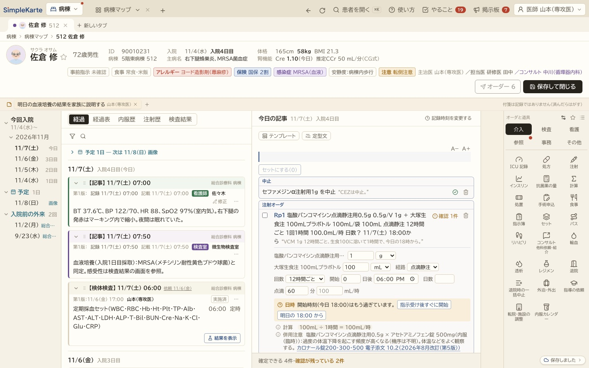
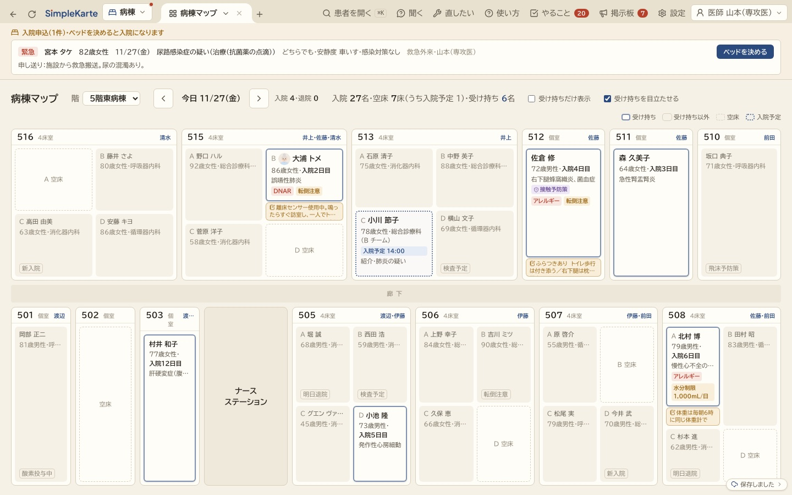
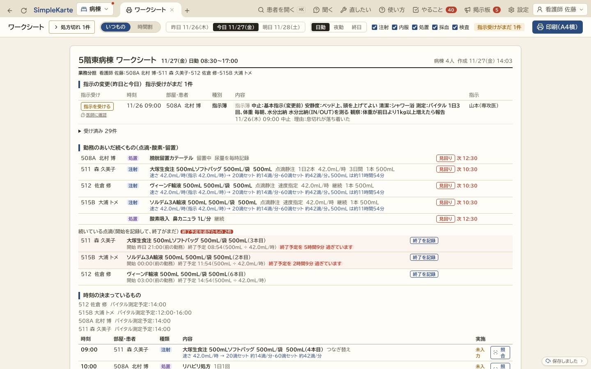
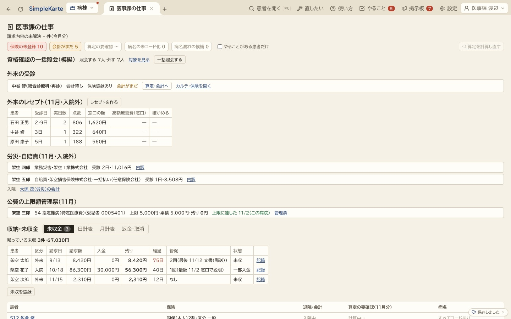
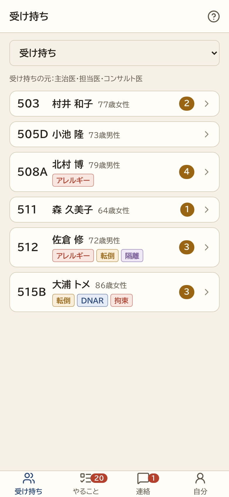
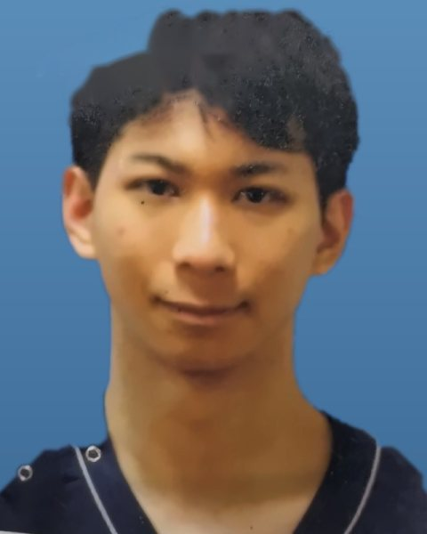

話した指示が、オーダーの下書きに。医師・看護師・薬剤師・医事課が、同じ記録を自分の画面で使う病棟の電子カルテです。開発者の医師が非常勤として病院で働きながら、院に合わせて直していきます。
いまは架空の患者のデータで動かして確かめている段階で、共同開発の病院を募集しています。病院での稼働の実績はまだありません。


POINT
「VCM 1g 12時間ごと、生食100に溶いて1時間で、今日の18時から」と話す（打つ）と、AIが薬・量・回数・時刻に分けて下書きにします。点滴の速さや時刻の計算、重複・併用注意の確認はプログラムが行い、あいまいなところは選択肢つきで聞き返します。確定するのは医師です。
医師が確定した指示は、看護師のワークシートの「指示受け」に並び、薬剤部の監査、検査室の受付、医事課の算定へつながります。職種ごとに、最初に開く画面と、確定できる操作が決まっています。
開発者の医師が非常勤として病院に勤務し、診療をしながら、医師・看護師・医事課の皆さまの使い方を見て直します。全院で同じ作りにするのではなく、院のやり方に合わせます。
FEATURES
いま動いている機能です。画面に出る患者・病院・職員・院内の取り決めは、すべて架空のデータです。
記事に指示を話す（打つ）と、AIが項目に分けて院内のマスターの番号を当てます。量・速さ・時刻の計算と、重複・併用注意・配合の確認はプログラムが行い、血中濃度を測る時刻も投与の開始と間隔から出します。決めるのは医師です。
勤務帯ごとに、注射・内服・処置・採血を時刻順に、点滴・酸素・留置は「勤務のあいだ続くもの」に並べ、A4横で印刷できます。新しい指示と中止は「指示受け」に出て、1件ずつ受けると時刻が残ります。点滴・酸素・尿道カテーテルの見回りも記録できます。
部屋とベッドの見取り図に、患者・空床・入院予定を並べます。入院の申し込みから空いたベッドを決め、転床はカードを空床へ動かします。「採血・血圧測定禁」などのベッドの注意事項も出せます。
最新のバイタル、12時間の指示、結果待ちの培養は、カルテから集めます。送る人が話した内容は、AIが「患者の要約・やること・もし〜なら」の欄に分けます。重症度は人が選び、受けた人が復唱して受けます。
入院診療計画書・栄養管理計画書・褥瘡・転倒転落・せん妄・退院支援の期限を、入院日から数えて患者ごとの表に出します。
処方監査（同じ成分の重複・併用禁忌・併用注意）、疑義照会、持参薬鑑別、注射の払出とラベル、抗がん剤の監査と調製、退院時の薬の説明書と薬袋。
採血のラベルをバーコードで読んで検体を受け付け、結果を入れると基準範囲の外とパニック値に印が付きます。結果を出す前に、別の技師が承認する形にもできます。
出来高・DPC の算定、公費、レセプトのファイルの作成と点検、返戻・査定の取り込み、総括表、未収金の台帳までを、同じカルテの中に作っています。いまは架空の記録で確かめている段階です。オンライン請求への送信は、医事課が請求端末で行います。
病棟の看護師と医師が、スマートフォン1台で受け持ちの患者を見て、記録まで済ませる専用の画面があります。
救急隊からの受け入れの連絡、透析の条件と除水の計算、ICU・HCU の記録も、同じカルテにつながっています。
本番と同じ画面の練習の場です。記録は本番に入らず、メールや外部への送信は止まります。導入前の練習や、新しく来た職員の練習に使えます。
院内の登録した端末が、記録の写しを暗号化して持ちます。サーバーが使えないときは、職員番号と非常時のPINで、読むだけの画面から記録を見られます。誰が見たかも記録します。
院の記録は、FHIR R4（JP Core）とCSVで書き出せます。
接続の検証を進めています（準備中）。
SCREEN
画面の左上の「SimpleKarte」は開発中の名前です。患者・病院・職員はすべて架空です。



CO-DEVELOPMENT

ファストカルテは、病院で働く医師が自分で作っている電子カルテです。回診のあとに、口で言えば数秒の指示を、画面で1つずつ選んで入れる手間を減らしたいと考えて作りました。
画面の並び、入力欄、文書、院内の取り決め（点滴の見回りの間隔など）を、その病院のやり方に合わせます。
FLOW
大切なこと：いまは、架空の患者のデータで動かして確かめている段階で、共同開発の病院を募集しています。病院での稼働の実績はまだありません。実際の患者さんの記録での運用は、架空の記録での確認と院でのご確認を経てからになります。
Q&A
月額50万円（税抜）が目安です。病床数・使う部署・作り込みの範囲によって変わるため、うかがってからお見積もりします。はじめは1つの病棟・1つの部署の小さな範囲から始める形を想定しています。
いまは架空の患者のデータで動かして確かめている段階で、共同開発の病院を募集しています。病院での稼働の実績はまだありません。共同開発の病院で、架空の記録での確認と院でのご確認を経てから、実際の患者さんの記録での運用に進みます。
はじめから全体を入れ替える前提ではありません。どの部署・どの業務から始めるかは、院の状況とお困りのことをうかがって、一緒に決めます。
入院の算定（出来高・DPC）、レセプトのファイルの作成と点検、返戻・査定の取り込みまで、同じカルテの中に作っています。いまは架空の記録で確かめている段階で、実際の請求に使ったことはありません。オンライン請求への送信は、医事課が請求端末で行う形です（アプリからは送りません）。いまお使いのレセコンとのつなぎ方は、院の環境をうかがってご相談します。
オーダーなどの下書きを作るときに、Anthropic 社のクラウドのAIサービス（Claude の API）へ送るのは、話した（打った）文と院内のマスター（薬や検査の一覧）です。氏名・生年月日・患者IDは送りません。お薬手帳の写真は、利用者が四角で囲んだ薬の行だけを送ります。話した文の中に名前が入っていれば、そのまま送られます。重複や腎機能などの確認は、AIではなくプログラムで行います。
院内の登録した端末が、記録の写しを暗号化して持ちます（15分ごとに更新し、72時間で消します）。サーバーが使えないときや、管理者が非常時を宣言したときは、職員番号と非常時のPINで入る、読むだけの画面で記録を見られます。誰が・なぜ・どの患者を見たかを記録し、戻ったあとでサーバーの監査ログに送ります。
開発者の医師（総合診療科）が非常勤の医師として院に勤務し、診療をしながら、医師・看護師・医事課の皆さまの使い方を見て、カルテを院に合わせて直していきます。勤務の日数や内容は、ご相談のうえで決めます。
一般病棟・地域包括ケア病棟・回復期リハビリテーション病棟・療養病棟などをお持ちの、中小規模の病院を想定しています。
CONTACT
共同開発のご相談は、こちらのフォームから（約1分）。
ご相談を受け付けました。
ご記入のメールアドレスに、鈴木から折り返しご連絡します。
メールでも受け付けています：info@suzuki-medical-engineering.work